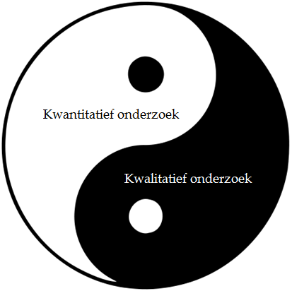

Tijdens de eerste sprint is het de bedoeling om te leren hoe je een goede onderzoeksvraag kunt formuleren. Samen met de stakeholders is het de bedoeling om in de eerste fase te onderhandelen over de onderzoeksvraag. Uiteindelijk zal dit resulteren in een vraag die voldoet aan alle gestelde critera. De uitkomst van de eerste sprint is een juiste vraag waarmee men een goede basis heeft voor het onderzoek. De volgende stap is de analyse fase. De ontwerpkeuzes die men hier maakt bepalen de validiteit en betrouwbaarheid van het onderzoek. Tijdens sprint 2 is het de bedoeling om een onderzoeksmethode samen te stellen die optimaal aansluit bij de onderzoeksvraag.
Sprint 2
De uitkomst van de eerste sprint is een juiste vraag waarmee men een goede basis heeft voor het onderzoek. De volgende stap is de analyse fase. De ontwerpkeuzes die men hier maakt bepalen de validiteit en betrouwbaarheid van het onderzoek. Tijdens sprint 2 is het de bedoeling om een onderzoeksmethode samen te stellen die optimaal aansluit bij de onderzoeksvraag.

Sprint 3
In sprint 2 is een onderzoeksmethode uitgewerkt. Tijdens de derde sprint is het de bedoeling om het onderzoek uiteindelijk uit te voeren, het eigen werk testen en leerpunten opstellen. De kennis en vaardigheden die men hiermee opdoet, gebruik men om gedurende de minor waardevol kennismateriaal over Smart Industry te ontwikkelen. Al het werk dat opgeleverd wordt, zal onder een creative commons licentie ter beschikking worden gesteld aan iedereen die geïnteresseerd is in het onderwerp. Zo helpt met onder andere het innovatievermogen van Nederland te versterken.
Klik hier voor meer informatie